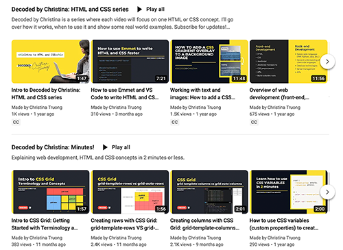
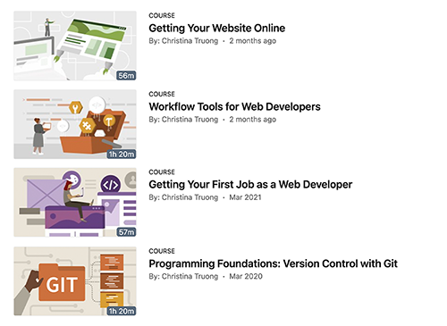
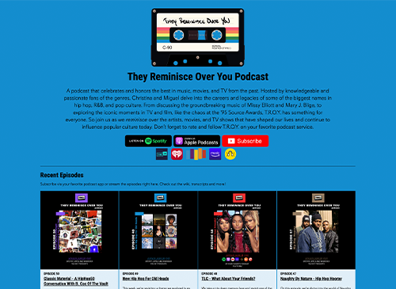
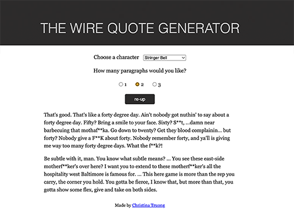

Profile
I am a Communication Design student at North Island College with an interest in web development, coding, and UI/UX design. I enjoy learning new technologies and creating simple, user-friendly digital experiences. I am building my skills in HTML, CSS, JavaScript, and Figma through my studies and personal projects.
Back to homepage
Web Development Portfolio
A web development project focused on HTML and CSS. I used this project to practice creating a clean layout, organizing content, and building a simple responsive website.

Web Design Course Project
A website project created to practice web design and front-end development. The project helped me improve my understanding of HTML, CSS, page structure, and visual presentation.

Podcast Website Design
A website design project focused on presenting information in a clear and organized way. I used it to practice page structure, images, links, and creating an easy-to-use website layout.

Interactive Web Project
A small interactive web project created to practice front-end development. It helped me understand how content, layout, and basic web functionality can work together in a website.
Customer Service Manager
Walmart Canada
2025 - Present
Managing customer service operations and supporting daily store activities. I have experience working on the sales floor and outside the store, and supporting general merchandise operations. I also work with associates to provide good customer service and support daily store operations.
Cashier
Reliance Smart, Kaithal, India
2025
Assisted customers with purchases, handled cash and payments, maintained a clean checkout area, and supported daily store operations.
Office Administrative Executive
Private Business, India
2023 - 2024
Supported daily office operations, organized documents, communicated with customers, and completed basic administrative tasks using computer applications.
North Island College - Courtenay, British Columbia
Communication Design Diploma - Design & Development Stream
2025 - Present
Studying graphic design, UI/UX design, web development, HTML, CSS, JavaScript, typography, and digital design.
Senior Secondary Education - India
Non-Medical with Computer, 2022
Completed senior secondary education with a focus on mathematics, science, and computer studies.